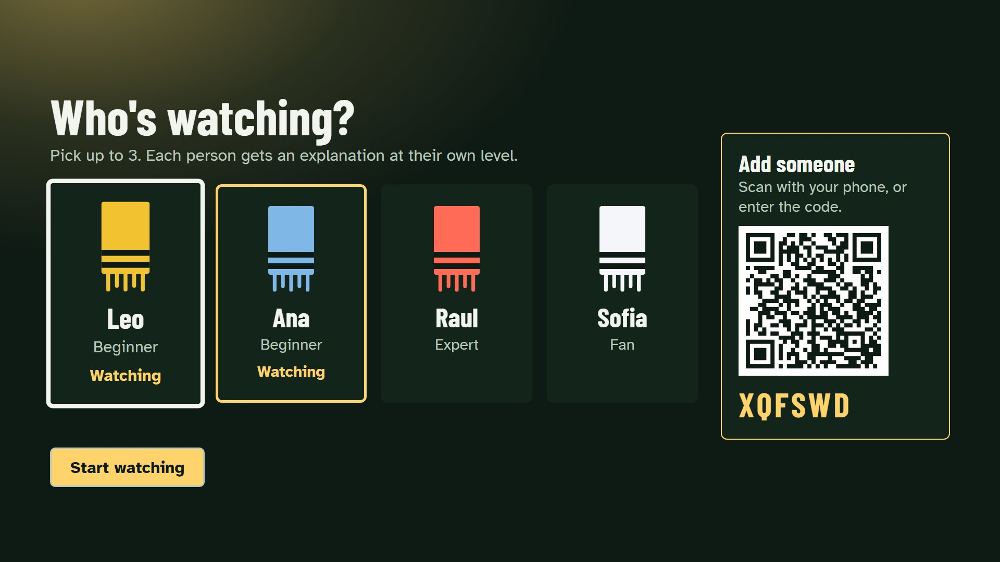
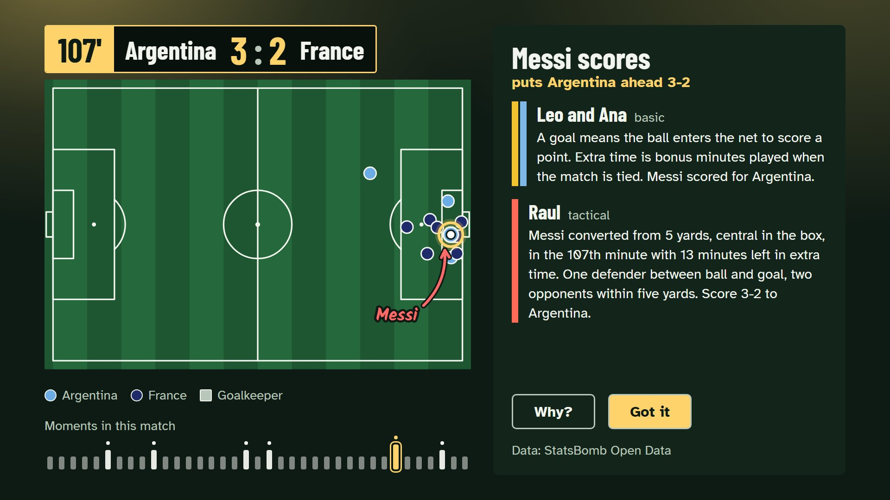
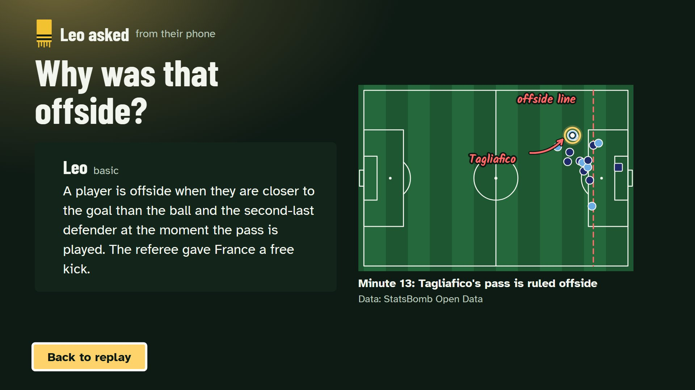
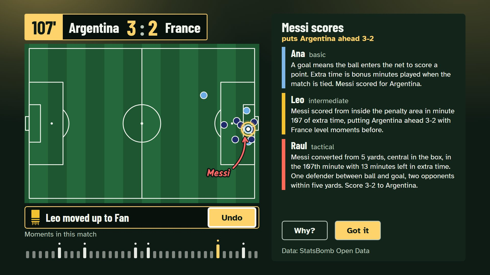
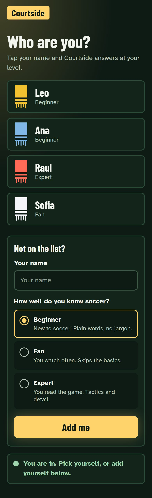
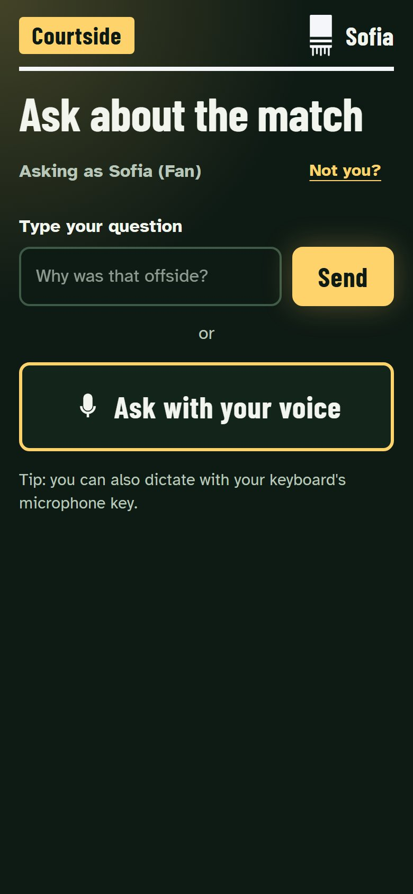
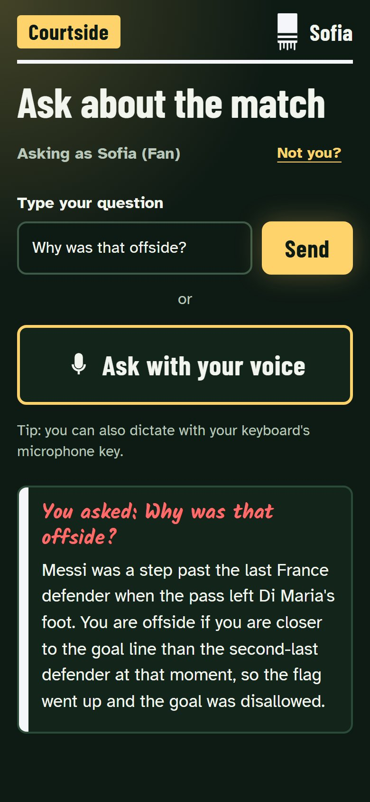
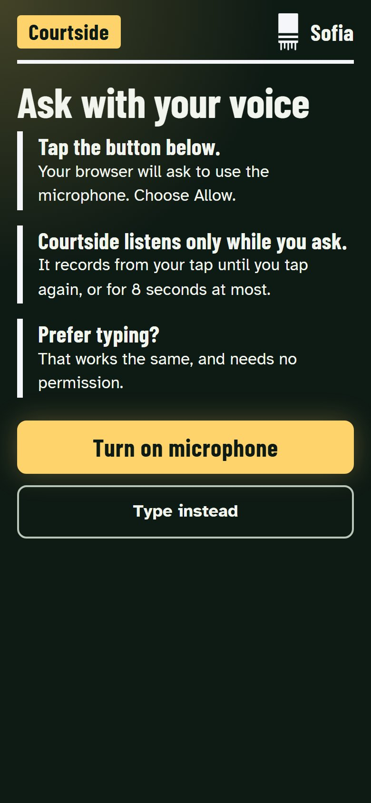
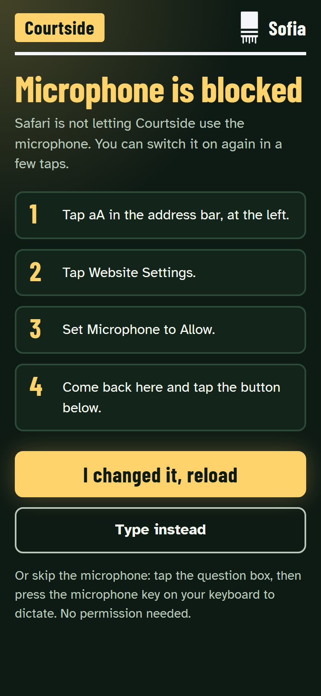
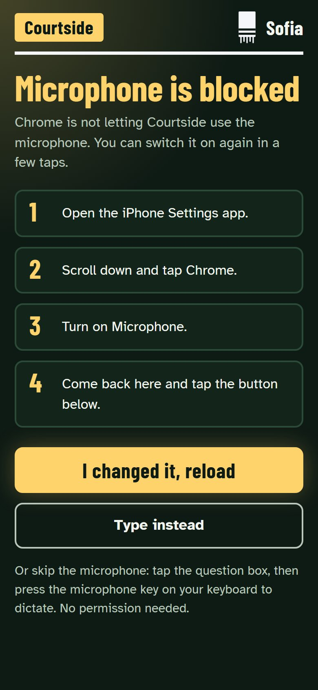

<title>Courtside visual directions</title>
<style>
:root{--bg:#f6f7f9;--text:#15191e;--dim:#4a525b;--card:#fff;--line:#d5dae0;--link:#0b5cad}
@media (prefers-color-scheme:dark){:root:not([data-theme="light"]){--bg:#14171b;--text:#eef1f4;--dim:#b3bcc6;--card:#1e2227;--line:#363c44;--link:#8ab9ee;color-scheme:dark}}
:root[data-theme="dark"]{--bg:#14171b;--text:#eef1f4;--dim:#b3bcc6;--card:#1e2227;--line:#363c44;--link:#8ab9ee;color-scheme:dark}
*{box-sizing:border-box}
body{margin:0;background:var(--bg);color:var(--text);font:18px/1.5 system-ui,-apple-system,"Segoe UI",Roboto,sans-serif}
main{max-width:1280px;margin:0 auto;padding:24px 16px 64px}
h1{font-size:2rem;margin:0 0 8px}
h2{font-size:1.6rem;margin:0 0 4px}
h3{font-size:1rem;margin:0 0 8px;font-weight:600}
p{margin:0 0 12px;max-width:68ch}
.dim{color:var(--dim)}
nav{display:flex;flex-wrap:wrap;gap:8px;margin:16px 0 8px}
nav a{color:var(--link);padding:10px 16px;border:1px solid var(--line);border-radius:8px;text-decoration:none;background:var(--card);font-weight:600}
section{margin-top:48px;padding-top:24px;border-top:1px solid var(--line)}
.tv{display:grid;grid-template-columns:repeat(2,1fr);gap:20px;margin:20px 0 28px}
figure{margin:0}
figure img{display:block;width:100%;height:auto;border:1px solid var(--line);border-radius:6px;background:var(--card)}
figcaption{font-size:.95rem;color:var(--dim);margin-top:6px}
.phones{display:flex;gap:16px;overflow-x:auto;padding-bottom:12px;align-items:flex-start}
.phones figure{flex:0 0 200px}
@media (max-width:760px){.tv{grid-template-columns:1fr}}
img{max-width:100%}
</style><main>
<h1>Courtside visual directions</h1>
<p>Approved on 5 Oct 2026: Floodlight with scarf colours and marker notes.</p>
<section><h2>On the TV</h2><div class="tv"><figure><figcaption>Who's watching?</figcaption></figure><figure><figcaption>Replay with the explanation</figcaption></figure><figure><figcaption>A question answered on the TV</figcaption></figure><figure><figcaption>Leo moves up a level</figcaption></figure></div></section>
<section><h2>On the phone</h2><div class="phones"><figure><figcaption>Join with the code</figcaption></figure><figure><figcaption>Pick yourself</figcaption></figure><figure><figcaption>Ask a question</figcaption></figure><figure><figcaption>The answer on the phone</figcaption></figure><figure><figcaption>Before the microphone permission</figcaption></figure><figure><figcaption>Microphone blocked, Safari</figcaption></figure><figure><figcaption>Microphone blocked, Chrome</figcaption></figure></div></section>
</main>
